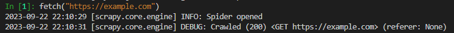
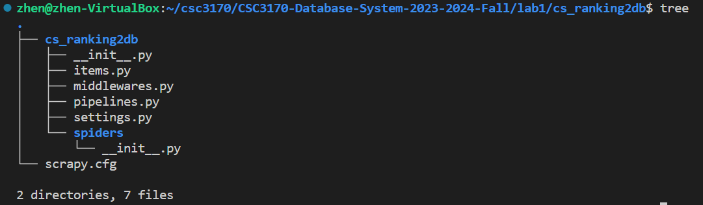
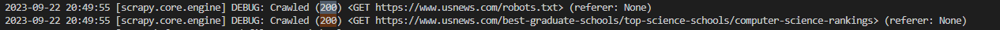
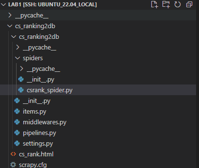
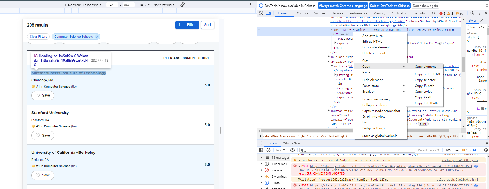
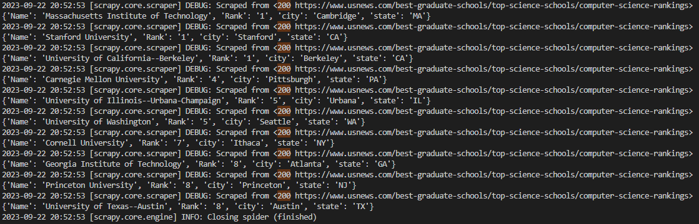
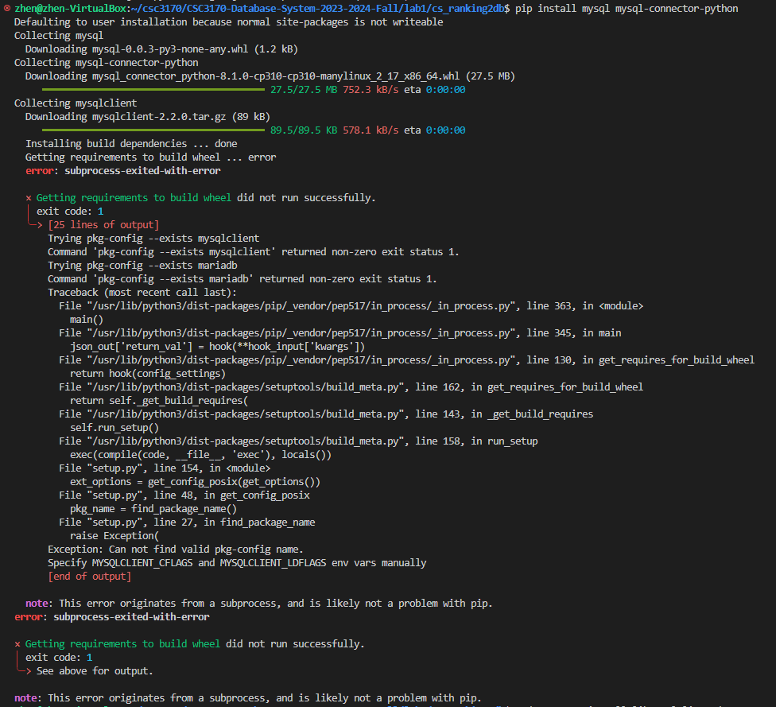
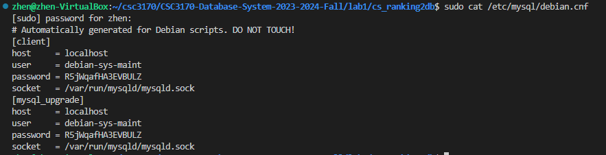
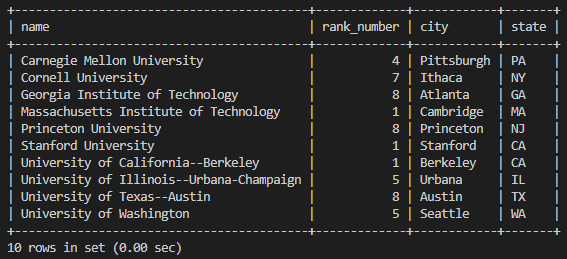

Author: Zhen TONG 2023-9-22
The first lab focuses on Python web crawling and populating data into your local database. We have designed this lab program with the understanding that this technique will be essential for your final project. Beyond just creating a database, it's crucial to have valuable data to populate it with. In this project, we will leverage Scrapy, a highly efficient web crawling framework, in conjunction with MySQL. Our target website for crawling is the US News computer science ranking page:
US News Computer Science Rankings
You can access Lab 1 in this GitHub repository.
We will guide you through the entire process in a systematic pipeline order:
Crawl Data
Utilizing the Scrapy Shell
Setting Up the Workspace
Creating Our First Spider
Data Extraction
Store Data
Dependencies
Meta Data
Saving Scraped Items to the Database
Activating Our Item Pipeline
Running and Testing
Before we begin, we highly recommend using a Linux-based system. Ubuntu 22, in particular, will greatly simplify the process. Now, let's dive into the exciting world of web crawling! 🚀
Let's get a little taste of crawling:
Interactive Console: The Scrapy Shell provides an interactive Python console where you can run Python code and Scrapy commands in real-time. It's an environment where you can experiment with and explore web page structures and test XPath or CSS selectors.
Accessing the Shell: You can access the Scrapy Shell by running the following command in your terminal:
scrapy shell$ scrapy shell2023-09-20 23:46:15 [scrapy.utils.log] INFO: Scrapy 2.11.0 started (bot: whiskyscraper)...2023-09-20 23:46:19 [asyncio] DEBUG: Using selector: SelectSelectorIn [1]:This command starts the Scrapy Shell and loads the Scrapy project's settings and configurations.
Fetching Web Pages: Inside the Scrapy Shell, you can use Scrapy's built-in methods like fetch to retrieve web pages. For example:
xxxxxxxxxxpythonCopy codefetch("https://example.com")

This fetches the specified URL and allows you to inspect its content interactively.
XPath and CSS Selectors: You can experiment with XPath and CSS selectors to extract data from web pages. For instance:
xxxxxxxxxxresponse.xpath('//h1/text()').get()You can view the HTTP response from the web page, which includes the HTML content, headers, and other information:
In [3]: responseOut[3]: <200 https://example.com>To begin, execute the following command to create your Scrapy project workspace:
xxxxxxxxxxbashCopy codescrapy startproject cs_ranking2db
Once executed, you'll observe the directory structure within your workspace.

In essence, the spider performs two fundamental tasks:
Initiating an initial request.
Parsing the retrieved data.
The following is the code for our inaugural Spider. Please save it in a file named csrank_spider.py within the cs_ranking2db/spiders directory of your project:
def start_requests(self): urls = [ "https://www.usnews.com/best-graduate-schools/top-science-schools/computer-science-rankings", ] for url in urls: yield scrapy.Request(url=url, callback=self.parse)Saving HTML: Within the parse function, this step serves as the foundation for data extraction. While we'll delve deeper into data extraction later, for now, let's start by simply preserving all the HTML data as a file.
def parse(self, response): filename = f"cs_rank.html" Path(filename).write_bytes(response.body) self.log(f"Saved file {filename}")Using a Fake User-Agent: Before we dive into the actual scraping process, it's essential to address anti-crawling measures. Altering the user-agent is a widely employed technique in web scraping to overcome website-imposed anti-crawling restrictions. The user-agent serves as an HTTP header field that identifies the client initiating the request to the web server.
To facilitate this, you'll need to install a library that provides user-agent manipulation capabilities.
xxxxxxxxxxpip install fake-useragent
Therefore, add a fack-agent in your setting.py
xxxxxxxxxximport fake_useragentua = fake_useragent.UserAgent()USER_AGENT = ua.randomNext, navigate to your workspace directory and initiate the spider!
Ensure that the name of your spider matches the one specified in your class definition. In my case, it is named 'cs_ranks'.
xxxxxxxxxxclass CSRankSpider(scrapy.Spider): name = 'cs_ranks'xxxxxxxxxxscrapy crawl cs_ranks
If you observe state numbers in your terminal displaying '200,' congratulations, you have succeeded in your web scraping endeavor. However, if you encounter the less desirable '403' state, it may be due to a misconfiguration in the user-agent settings.🚩

After completing these steps, you may notice an HTML file in your directory. To further visualize the results, open this HTML file using your web browser locally. Upon doing so, you'll be able to view:

Now, let's proceed with parsing within the parse function.
School Name: To identify the school name, utilize the selection tool located in the upper-left corner to pinpoint the element within the HTML. From the image, it's evident that the school name is enclosed within an <h3> element and consists of two distinct parts. Right-click on this element to access the context menu and…

Subsequently, we can compose the following code to retrieve the school element:
xxxxxxxxxxh3_text = element.xpath('.//h3/text()').get()span_text = element.xpath('.//span/text()').get()school = h3_text+span_textprint(school)Rank Number: Determining the rank number is a bit tricky since the element structure is…
xxxxxxxxxx<strong size="2" class="Strong-sc-1m7huwa-0 NameRank__RankPosition-sc-10strfe-0 jDdPar efzpHW">#<!-- -->8<!-- --> </strong>The rank number is embedded within a format <!-- -->, which necessitates the use of regular expressions for extraction. Import re first. While there might be more efficient methods, employing regular expressions is a valuable practice that enhances your web scraping toolkit.
xxxxxxxxxxrank_element_str = row.xpath('.//strong').get()match = re.search(r'<!-- -->(\d+)<!-- -->', str(rank_element_str))if match: rank = match.group(1)else: rank =-1City and State: The representation of cities and states is as follows:
xxxxxxxxxx<p class="Paragraph-sc-1iyax29-0 cTffBs">Austin<!-- -->, <!-- -->TX</p>Therefore, the RE knowledge can be used again:
xxxxxxxxxxlocation_element = row.xpath('.//p').get()matches = re.findall(r'([\w\s]+)<!-- -->,\s<!-- -->([\w\s]+)', str(location_element))if matches: city, state = matches[0]else: city, state = None, NoneAs long as we extract the element with a school name, we combine all attributes.
x
if name_prefix and name_suffix: yield { 'Name': name_prefix + name_suffix, 'Rank': rank, 'city': city, 'state': state }Finally, run the spider again and you will see this:

In the parse method of a Scrapy spider, using yield is a common and important practice. Scrapy is built on asynchronous programming principles, and using yield allows you to create generator functions. More information
First, you need to install the mysql connection tool library
xxxxxxxxxxpip install mysql mysql-connector-python
but if you meet some ERROR like:

There is a dependency, and you need to first install libmysqlclient-dev, I am using Ubuntu, and:
xxxxxxxxxxsudo apt-get install libmysqlclient-dev
You may not meet this problem with other system, I mention here just in case you need.
In the pipelines.py file, you have the opportunity to define the behavior of your Scrapy code—what actions to take after obtaining the data.
First and foremost, it's crucial to ensure that you have the correct MySQL database information in place. In a Linux environment, you can verify the host, user, and password by running the following commands:
xxxxxxxxxxsudo cat /etc/mysql/debian.cnf

After you know the database information , you can start the pipeline design. First, you need to set up a database for this project
xmysql -u <YOUR USER NAME> -p
xxxxxxxxxxWelcome to the MySQL monitor. Commands end with ; or \g.Your MySQL connection id is 12Server version: 8.0.34-0ubuntu0.22.04.1 (Ubuntu)Copyright (c) 2000, 2023, Oracle and/or its affiliates.Oracle is a registered trademark of Oracle Corporation and/or itsaffiliates. Other names may be trademarks of their respectiveowners.Type 'help;' or '\h' for help. Type '\c' to clear the current input statement.mysql> CREATE DATABASE cs_rank_db;Query OK, 1 row affected (0.09 sec)mysql> exit;Bye
Then, design you table. I set the name attribute as PK because the rank is not unique 🤣Carefully set the PK length~
xxxxxxxxxxclass CsRanking2DbPipeline:
def __init__(self):
self.conn = mysql.connector.connect( host = 'localhost', user = 'debian-sys-maint', password = 'R5jWqafHA3EVBULZ', database = 'cs_rank_db' )
## Create cursor, used to execute commands self.cur = self.conn.cursor() ## Create quotes table if none exists self.cur.execute(""" CREATE TABLE IF NOT EXISTS cs_rank( name text, rank_number int, city text, state text, PRIMARY KEY (name(255)) -- Specify a key length (e.g., 255 characters) ) """)
Moving forward, we will employ the process_item event within our Scrapy pipeline to store the scraped data in our MySQL database.
The process_item method will be triggered every time an item is scraped by our spider. Therefore, it is essential to configure the process_item method to insert the item's data into the database
x
def process_item(self, item, spider): ## Define insert statement self.cur.execute(""" insert into cs_rank (name, rank_number, city, state) values (%s,%s,%s,%s)""", ( item["name"], str(item["rank_number"]), item["city"], item["state"] )) ## Execute insert of data into database self.conn.commit()We will also the close_spider method, which will be called when the Spider is shutting down, to close our connections to the cursor and database to avoid leaving the connection open.
x
def close_spider(self, spider): ## Close cursor & connection to database self.cur.close() self.conn.close()Finally, to activate our Item Pipeline we need to uncomment this line in our settings.py file:
xxxxxxxxxx# Configure item pipelines# See https://docs.scrapy.org/en/latest/topics/item-pipeline.htmlITEM_PIPELINES = { "cs_ranking2db.pipelines.CsRanking2DbPipeline": 300,}Now, you are allowed to run your first crawl pipeline program
xxxxxxxxxxscrapy crawl cs_ranks
Go into your database and check if everything is going on well:
xxxxxxxxxxUSE cs_rank_db;SELECT * FROM cs_rank;
Yeah! Now you can play with it with more sql like:
xxxxxxxxxxSELECT * FROM cs_rank ORDER BY rank_number DESC;Now you must have gained some knowledge about scrapy and database pipeline. Have a nice weekend!